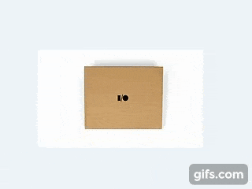

現在位置： 首頁 > VR介紹 > 什麼是VR？ > 程式結合 VR程式結合  VR 與 手機的結合 現今的VR設備普遍是與手機結合，如 Google 的 Cardbroad 或是 Samsung 的 Gear VR 等等。雖然手機上模擬出的虛擬物件確實會比較吃力，但是很方便，隨時隨地都能體驗VR所帶來的歡樂。(點我觀賞影片) VR 與 電腦的結合 在電腦上配合各式各樣的軟體(如：Steam上的應用程式)，可使用 HTC Vive 或是 Oculus VR 等裝置來體驗更加真實的畫質與體感的呈現。(點我觀賞影片) VR 與 影片的結合 現在大多數的影片都已Youtube 或是 Facebook 上的360度環景系統來做主力，以最方便的方式來體驗最真實的臨場感。(點我觀賞影片) VR 與 現實生活的結合 目前電腦上的VR軟體有非常非常的多，就像它可以結合 醫療訓練、 飛行訓練、 汽車保養、 駕駛培訓、 射擊訓練、 職場訓練 或是 烹飪訓練 ...等等各式各樣的模擬程式。它們的畫質、音效...等等，都很擬真呢！